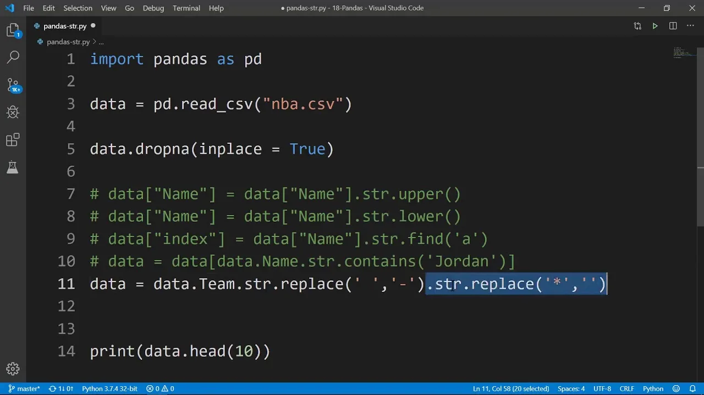
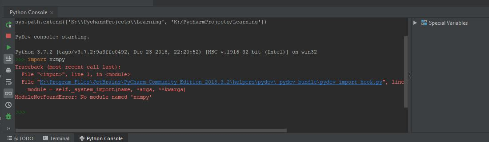
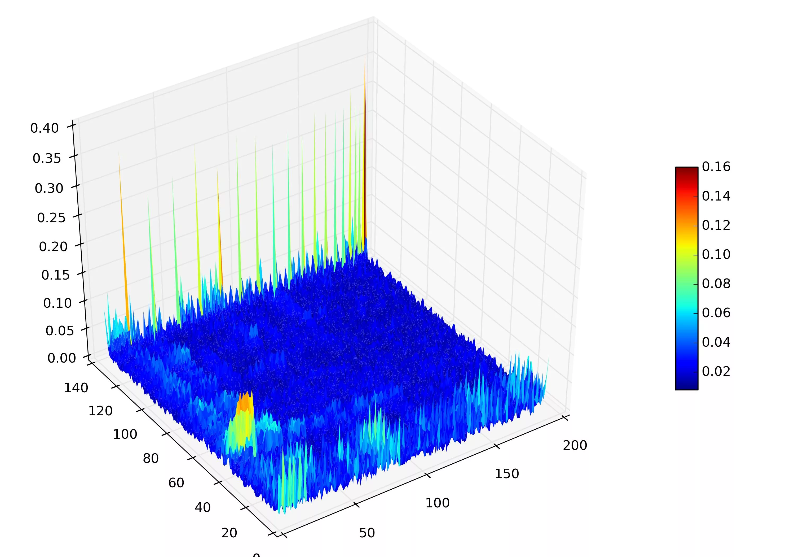

Библиотеки Python для анализа данных
Мощные инструменты для работы с данными, вычислений и визуализации
Зачем нужны библиотеки для анализа данных?
Python сам по себе - мощный язык, но его настоящая сила раскрывается с использованием специализированных библиотек. Они предоставляют:
Производительность
Оптимизированный код на C/C++ под капотом
Удобство
Готовые решения для частых задач
Визуализация
Средства для наглядного представления данных
Аналитика
Инструменты для статистики и ML
Установка библиотек
# Установка через pip
pip install pandas numpy matplotlib
# Для работы в Jupyter Notebook
pip install jupyterPandas - анализ табличных данных
Pandas предоставляет высокоуровневые структуры данных и инструменты для анализа данных. Основные структуры:
Series
Одномерный массив с метками (индексом)
import pandas as pd
s = pd.Series([1, 3, 5, 7], index=['a', 'b', 'c', 'd'])DataFrame
Двумерная таблица с строками и столбцами
data = {
'Name': ['Alice', 'Bob', 'Charlie'],
'Age': [25, 30, 35],
'City': ['Moscow', 'London', 'Paris']
}
df = pd.DataFrame(data)Основные операции
- Чтение данных: CSV, Excel, SQL, JSON
- Очистка данных: обработка пропусков, дубликатов
- Преобразования: фильтрация, сортировка, группировка
- Агрегация: статистические вычисления
- Слияние данных: объединение таблиц
Пример: Анализ данных о фильмах
# Создаем DataFrame
movies = pd.DataFrame({
'Title': ['Inception', 'Interstellar', 'The Matrix', 'Tenet'],
'Year': [2010, 2014, 1999, 2020],
'Director': ['Christopher Nolan', 'Christopher Nolan', 'Lana Wachowski', 'Christopher Nolan'],
'Rating': [8.8, 8.6, 8.7, 7.4]
})
# Фильтруем фильмы Нолана
nolan_movies = movies[movies['Director'] == 'Christopher Nolan']
# Группируем по режиссеру и считаем средний рейтинг
avg_rating = movies.groupby('Director')['Rating'].mean()
print("Фильмы Нолана:")
print(nolan_movies)
print("\nСредний рейтинг по режиссерам:")
print(avg_rating)Результат:
Применение в реальных проектах:
- Анализ финансовых данных
- Обработка логов веб-серверов
- Подготовка данных для машинного обучения
- Анализ пользовательской активности
NumPy - вычисления с массивами
NumPy - фундаментальная библиотека для научных вычислений в Python. Основные возможности:
Многомерные массивы
Быстрые и эффективные n-мерные массивы
Векторизация
Операции над целыми массивами без циклов
Линейная алгебра
Матричные операции, разложения
Генерация данных
Случайные числа, последовательности
Основные преимущества
- Производительность: Оптимизированные операции на C
- Удобство: Единый интерфейс для различных операций
- Интеграция: Основа для многих других библиотек (SciPy, scikit-learn)
- Широкие возможности: Математические функции, работа с Фурье, статистика
Пример: Работа с матрицами
import numpy as np
# Создаем матрицу 3x3
matrix = np.array([
[1, 2, 3],
[4, 5, 6],
[7, 8, 9]
])
# Транспонирование матрицы
transposed = matrix.T
# Определитель матрицы
determinant = np.linalg.det(matrix)
# Обратная матрица
inverse = np.linalg.inv(matrix + np.eye(3)) # Добавляем единичную матрицу для обратимости
print("Исходная матрица:")
print(matrix)
print("\nТранспонированная матрица:")
print(transposed)
print(f"\nОпределитель: {determinant:.2f}")
print("\nОбратная матрица:")
print(inverse)Результат:
Сравнение производительности:

NumPy значительно быстрее благодаря векторизации операций
Matplotlib - визуализация данных
Matplotlib - основная библиотека для создания статичных, анимированных и интерактивных визуализаций в Python.
Основные компоненты
Figure
Область для построения графиков (холст)
Axes
Отдельный график с координатными осями
Axis
Оси координат с делениями и метками
Artist
Все визуальные элементы (текст, линии, фигуры)
Типы визуализаций
Линейные графики
Столбчатые диаграммы
Гистограммы
Точечные диаграммы
Круговые диаграммы
Тепловые карты
Пример: Визуализация данных
import matplotlib.pyplot as plt
import numpy as np
# Создаем данные
x = np.linspace(0, 10, 100)
y1 = np.sin(x)
y2 = np.cos(x)
y3 = np.random.normal(0, 0.1, 100)
# Создаем фигуру с несколькими областями
fig, axs = plt.subplots(2, 2, figsize=(12, 8))
# Линейный график
axs[0, 0].plot(x, y1, 'r-', label='sin(x)')
axs[0, 0].set_title('Синусоида')
axs[0, 0].legend()
# Столбчатая диаграмма
categories = ['A', 'B', 'C', 'D']
values = [23, 45, 56, 78]
axs[0, 1].bar(categories, values, color='skyblue')
axs[0, 1].set_title('Столбчатая диаграмма')
# Точечная диаграмма
axs[1, 0].scatter(x, y3, alpha=0.5)
axs[1, 0].set_title('Точечный график')
# Гистограмма
data = np.random.randn(1000)
axs[1, 1].hist(data, bins=30, color='green', alpha=0.7)
axs[1, 1].set_title('Гистограмма')
plt.tight_layout()
plt.show()Результат:
Интерактивная визуализация:

Комбинирование библиотек
Настоящая сила этих библиотек раскрывается при их совместном использовании:
Загрузка данных
Pandas для чтения данных из различных источников
Обработка данных
Очистка, преобразование и подготовка данных
Математические операции
Численные вычисления, линейная алгебра
Визуализация
Создание графиков и диаграмм
Полный пример анализа данных
import pandas as pd
import numpy as np
import matplotlib.pyplot as plt
# 1. Загрузка данных
data = pd.read_csv('sales_data.csv')
# 2. Обработка данных
data['Date'] = pd.to_datetime(data['Date'])
data['Month'] = data['Date'].dt.month
data['Revenue'] = data['Price'] * data['Quantity']
# 3. Анализ
monthly_sales = data.groupby('Month')['Revenue'].sum()
avg_sales = np.mean(monthly_sales)
std_sales = np.std(monthly_sales)
# 4. Визуализация
plt.figure(figsize=(10, 6))
months = ['Jan', 'Feb', 'Mar', 'Apr', 'May', 'Jun',
'Jul', 'Aug', 'Sep', 'Oct', 'Nov', 'Dec']
plt.bar(months, monthly_sales, color='teal')
plt.axhline(avg_sales, color='red', linestyle='--', label=f'Среднее: ${avg_sales:,.2f}')
plt.fill_between(months, avg_sales-std_sales, avg_sales+std_sales,
color='red', alpha=0.1, label='±1 std')
plt.title('Ежемесячные продажи')
plt.xlabel('Месяц')
plt.ylabel('Выручка ($)')
plt.legend()
plt.grid(alpha=0.3)
plt.tight_layout()
plt.show()